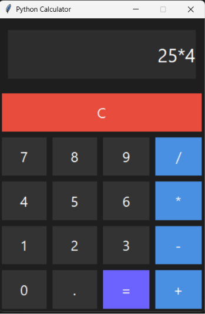

Purple Automotive Concept
自動車デザイン
2026
Photoshop • Illustrator


2026
Figma • グラフィックデザイン • UIデザイン



PythonとTkinterを使用して開発した電卓です。 加算・減算・乗算・除算に対応しており、 小数点を含む計算も行えます。
A modern travel planning website for Japan. Users can explore destinations, create travel plans, estimate travel costs and discover popular attractions.
shivan@example.com
Nagoya, Japan
German • English • Japanese
Webデベロッパー & ITプログラミング専攻学生
HTML • CSS • JavaScript • Python • Photoshop • Illustrator • Figma

See you again.